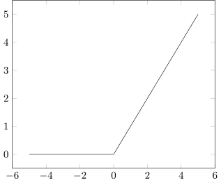

%load_ext itikzIntroduction
In 1943, McCulloch and Pitts introduced artificial intelligence to the world. Their idea was to develop an algorithmic approach to mimic the functionality of the human brain. Due to the structure of the brain consisting of a net of neurons, they introduced the so-called artificial neurons as building blocks.
In it’s most simple form, the neuron consists of :
- dendrites, which receive the information from other neurons
- soma, which processes the information
- synapse, transmits the output of this neuron
- axon, point of connection to other neurons
Consequently, a mathematical definition of an artificial neuron is as follows.
Definition. An artificial neuron with weights \(w_1,\ldots,w_n \in \mathbf{R}\), bias \(b\in\mathbf{R}\) and an activation function \(\rho:\mathbf{R} \to \mathbf{R}\) is defined as the scalar-valued function \(f:\mathbf{R}^n \to \mathbf{R}\) given by:
\[\begin{align*} f(x_1,\ldots,x_n) = \rho \left(\sum_{i=1}^{n}w_i x_i + b\right) = \rho(\mathbf{w}^T \mathbf{x}+b) \tag{1} \end{align*}\]
where \(\mathbf{w} = (w_1,\ldots,w_n)\) and \(\mathbf{x}=(x_1,\ldots,x_n)\).
A single neuron by itself is useless, but when combined with hundreds or thousands(or many more) of other neurons, the interconnectivity can approximate any complex function and frequently outperforms any other machine learning methods.
Show the code
%%itikz --temp-dir --tex-packages=tikz --tikz-libraries=arrows --implicit-standalone
\begin{tikzpicture}
\foreach \i in {1,2}
{
\node[circle,
minimum size = 15mm,
fill=red!30
] (Input-\i) at (0,-\i * 2) {\large $x_\i$};
}
\foreach \i in {1,2,...,5}
{
\node[circle,
minimum size = 15mm,
fill=blue!50,
yshift=30 mm
] (Hidden1-\i) at (3.0,-\i * 2) {\large $h_\i^{(1)}$};
}
\foreach \i in {1,2,...,5}
{
\node[circle,
minimum size = 15mm,
fill=blue!50,
yshift=30 mm
] (Hidden2-\i) at (6.0,-\i * 2) {\large $h_\i^{(2)}$};
}
\foreach \i in {1,2}
{
\node[circle,
minimum size = 15mm,
fill=green!30] (Output-\i) at (9.0,-\i * 2) {\large $\hat{y}_\i$};
}
% Connect neurons In-Hidden1
\foreach \i in {1,...,2}
{
\foreach \j in {1,...,5}
{
\draw[->, shorten >=1pt] (Input-\i) -- (Hidden1-\j);
}
}
\foreach \i in {1,...,5}
{
\foreach \j in {1,...,5}
{
\draw[->, shorten >=1pt] (Hidden1-\i) -- (Hidden2-\j);
}
}
\foreach \i in {1,...,5}
{
\foreach \j in {1,2}
{
\draw[->, shorten >=1pt] (Hidden2-\i) -- (Output-\j);
}
}
\end{tikzpicture}
Dense layers, the most common layers, consist of interconnected neurons. In a dense layer, each neuron of a given layer is connected to every neuron of the next layer, which means its output value becomes an input for the next neurons. Each connection between neurons has a weight associated with it, which is a trainable factor of how much of this input to use. Once all of the \(\text{inputs} \cdot \text{ weights}\) flow into our neuron, they are summed and a bias, another trainable parameter is added.
Say, we have an input \(x_1\) and weight \(w_1\), then the output \(y_1 = w_1 x_1\) is a straight-line with slope \(w_1\).
Show the code
%%itikz --temp-dir --tex-packages=tikz,pgfplots --tikz-libraries=arrows --implicit-standalone
\begin{tikzpicture}[scale=1.5]
\begin{axis}
\addplot[color=blue]{x};
\addlegendentry{\(f(x)=x\)}
\addplot[color=red]{2*x};
\addlegendentry{\(f(x)=2x\)}
\end{axis}
\end{tikzpicture}
The bias offsets the overall function.
Show the code
%%itikz --temp-dir --tex-packages=tikz,pgfplots --tikz-libraries=arrows --implicit-standalone
\begin{tikzpicture}[scale=1.5]
\begin{axis}
\addplot[color=black]{x+1};
\addlegendentry{\(f(x)=x+1\)}
\addplot[color=gray]{x-1};
\addlegendentry{\(f(x)=x-1\)}
\end{axis}
\end{tikzpicture}
Activation functions
Let us now look at some examples of activation functions.
The heaviside function is defined as:
\[\begin{align*} \rho(x) &= \begin{cases} 1, & x > 0 \\ 0, & x \leq 0 \end{cases} \end{align*}\]
The sigmoid function is defined as:
\[\begin{align*} \rho(x) &= \frac{1}{1+e^{-x}} \end{align*}\]
Show the code
%%itikz --temp-dir --tex-packages=tikz,pgfplots --tikz-libraries=arrows --implicit-standalone
\begin{tikzpicture}[scale=1.5]
\begin{axis}
\addplot[color=black]{1/(1+exp(-x))};
\end{axis}
\end{tikzpicture}
The Rectifiable Linear Unit (ReLU) function is defined as:
\[\begin{align*} \rho(x) &= \max(0,x) \end{align*}\]
Show the code
%%itikz --temp-dir --tex-packages=tikz,pgfplots --tikz-libraries=arrows --implicit-standalone
\begin{tikzpicture}[scale=1.5]
\begin{axis}
\addplot[color=black]{max(0,x)};
\end{axis}
\end{tikzpicture}
Coding a layer with 3-neurons
Let’s code a simple layer with \(n=3\) neurons.
inputs = [1, 2, 3, 2.5]
weights = [[0.2, 0.8, -0.5, 1.0], [0.5, -0.91, 0.26, -0.5], [-0.26, -0.27, 0.17, 0.87]]
biases = [2, 3, 0.5]
# Output of the current layer
layer_outputs = []
# For each neuron
for neuron_weights, neuron_bias in zip(weights, biases):
# zeroed output of the neuron
neuron_output = 0.0
# for each input and weight to the neuron
for input, weight in zip(inputs, neuron_weights):
# multiply this input with the associated weight
# and add to the neuron's output variable
neuron_output += input * weight
# Add bias
neuron_output += neuron_bias
# Put the neuron's result to the layer's output list
layer_outputs.append(neuron_output)
print(layer_outputs)[4.8, 1.21, 2.385]We can achieve the same results as in our pure Python implementation of multiplying each component in our input vector \(\mathbf{x}\) and weights vector \(\mathbf{w}\) element-wise, by taking an inner product \(\mathbf{w} \cdot \mathbf{x}\).
import numpy as np
inputs = [1, 2, 3, 2.5]
weights = [
[0.2, 0.8, -0.5, 1.0],
[0.5, -0.91, 0.26, -0.5],
[-0.26, -0.27, 0.17, 0.87]
]
biases = [2, 3, 0.5]
# Output of the current layer
layer_outputs = np.dot(weights, inputs) + biases
print(layer_outputs)[4.8 1.21 2.385]